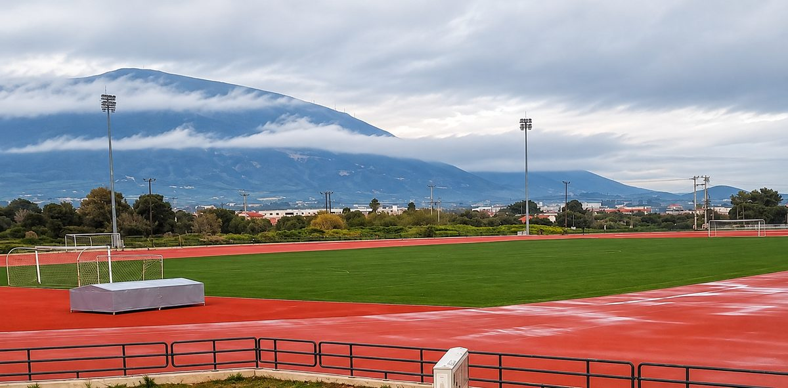

Κορωπί
Τα γήπεδά μας
Δύο γήπεδα στο Κορωπί. Οι εντός έδρας αγώνες πρωταθλήματος γίνονται στο «Αντώνης Πρίφτης».

«Αντώνης Πρίφτης»
Η έδρα της Δόξας για τους αγώνες πρωταθλήματος. Δείτε τις ώρες έναρξης στο πρόγραμμα αγώνων.
Στάδιο Γ.Σ. Παπασιδέρης
Το δεύτερο γήπεδο της Δόξας: χλοοτάπητας με στίβο, με θέα τον Υμηττό.
